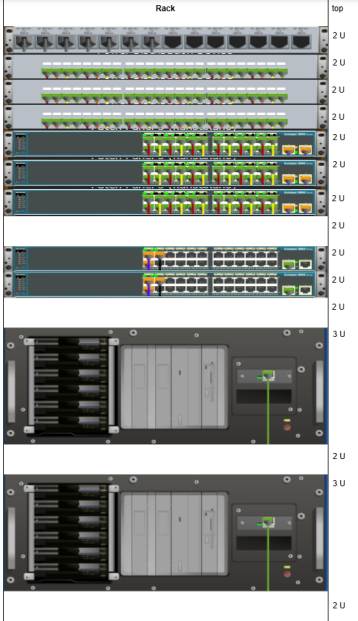
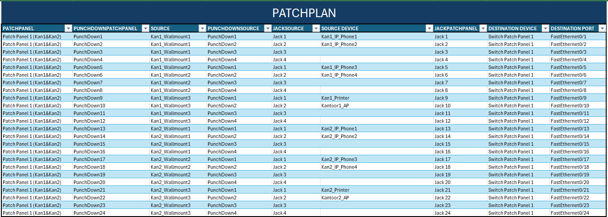

WebWizz
💻 Project: Gestructureerd Netwerkontwerp voor Webwiz
Voor het vak Datacom & Netwerken kreeg ik samen met een medestudent de opdracht om een gestructureerd netwerk uit te tekenen voor het bedrijf Webwiz. De eerdere netwerkaanpak van het bedrijf was chaotisch en ongestructureerd, wat leidde tot praktische problemen zoals slechte wifi-dekking, onveilige kabelbeheer, en moeilijkheden bij het opsporen van netwerkproblemen.
🛠️ Onze taak bestond uit:
- Een volledig gestructureerd bekabelingsplan ontwerpen dat voldoet aan de eisen van een modern bedrijfsnetwerk.
- Rekening houden met zaken zoals:
- 24 werkplekken verdeeld over 2 verdiepingen en 6 kantoren
- VoIP-telefonie per werkplek
- Flexibele laptops met wifi-dekking
- 2 on-premises servers in een afgesloten ruimte
- MFP's (printers/scanners) in elk kantoor
- Realistische scenario's oplossen, zoals het snel aansluiten van nieuwe medewerkers of het toevoegen van extra wifi-punten.
📦 Opgeleverde documenten:
- Aankooplijst: Gedetailleerde lijst van alle benodigde hardware (kabels, patchpanelen, switchen, racks, enz.) met prijzen en datasheets.
- Bekabelingsplan (Packet Tracer): Visueel schema van het netwerk met correcte bend points en positionering van apparaten.
- Rack Layout: Visueel overzicht van hoe de actieve netwerkcomponenten in het rack geplaatst worden en hoeveel U ze innemen.
- Patchplan: Overzichtstabel met alle connecties tussen patchpanelen, switchpoorten, outlets en netwerkapparatuur.
🎯 Doel:
Een toekomstgericht netwerk uittekenen dat schaalbaar, overzichtelijk en onderhoudsvriendelijk is — volledig volgens de principes van gestructureerd bekabelen.
📸 Screenshots van de opdracht


